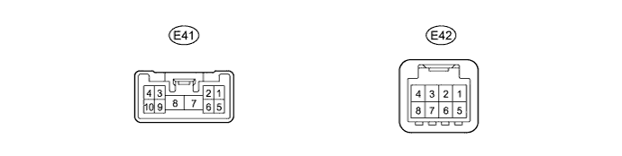
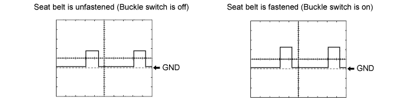

PRE-CRASH SAFETY SYSTEM > TERMINALS OF ECU |
| CHECK SEAT BELT CONTROL ECU |

Measure the voltage and resistance according to the value(s) in the table below.
| Terminal No. (Symbol) | Wiring Color | Terminal Description | Condition | Specified Condition |
| E41-2 (MOR+) - E41-8 (PGND) | L - W-B | Passenger side seat belt motor power source line | Engine switch on (IG) | 4 to 8.5 V |
| E41-3 (MOL+) - E41-8 (PGND) | GR - W-B | Driver side seat belt motor power source line | Engine switch on (IG) | 4 to 8.5 V |
| E42-8 (IG1) - Body ground | G - Body ground | Seat belt control ECU power source line | Engine switch on (IG) | 11 to 14 V |
| E41-7 (+B) - Body ground | R - W-B | Seat belt control ECU power source line | Always | 11 to 14 V |
| E41-1 (MOR-) - Body ground | B - Body ground | Passenger side seat belt motor ground line | Engine switch on (IG) | 4 to 8.5 V |
| E41-4 (MOL-) - Body ground | W - Body ground | Driver side seat belt motor ground line | Engine switch on (IG) | 4 to 8.5 V |
| E41-5 (PBK+) - Body ground | G - Body ground | Passenger side buckle switch ground line | Always | Below 1 Ω |
| E41-5 (PBK+) - E41-8 (PGND) | G - W-B | Passenger side buckle switch signal line | Engine switch on (IG) Front passenger side seat belt unfastened (Buckle switch off) | Waveform 1 |
| Engine switch on (IG) Front passenger side seat belt fastened (Buckle switchs on) | ||||
| E41-8 (PGND) - Body ground | W-B - Body ground | Seat belt control ECU ground line | Always | Below 1 Ω |
Inspect using an oscilloscope.
Waveform 1 (Reference)

| Terminal No. (Symbol) | E41-5 (PBK+) - E41-8 (PGND) |
| Tool Setting | 5 V/DIV., 20 ms./DIV. |
| Switch Condition | Engine switch on (IG) Front passenger side seat belt unfastened (Buckle switch off) |
| Engine switch on (IG) Front passenger side seat belt fastened (Buckle switch on) |